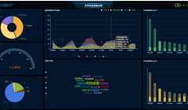
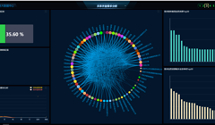

<main id="catalog">
  <div class="section-content">
    <aside class="menu-list">
      <el-tree highlight-current :data="regions" accordion :props="props" :load="loadNode" lazy="" @node-click="handleNodeClick"
        :render-content="renderContent"  node-key="id"  :default-expanded-keys="expandedKeys">
      </el-tree>
    </aside>
      <router-view class="router-catalog" :key="key"></router-view>  
  </div>
  <section class="float-profile">
    <a href="http://10.190.239.12:8080/data-view-web-scatter/pages/page_2/page.html?singlePage=true" class="share-link" target="_blank"><p>共享</p></a>
    <ul class="other-link">
      <li><a href="http://10.190.239.12:8080/data-view-web-scatter/pages/page_3/page.html?singlePage=true" class="share-link" target="_blank"></a><p>开放</p></li>
      <li><a href="http://10.190.239.12:8080/data-view-web-scatter/pages/page_4/page.html?singlePage=true" class="share-link" target="_blank"></a><p>主题</p></li>
    </ul>
  </section> 
</main>
